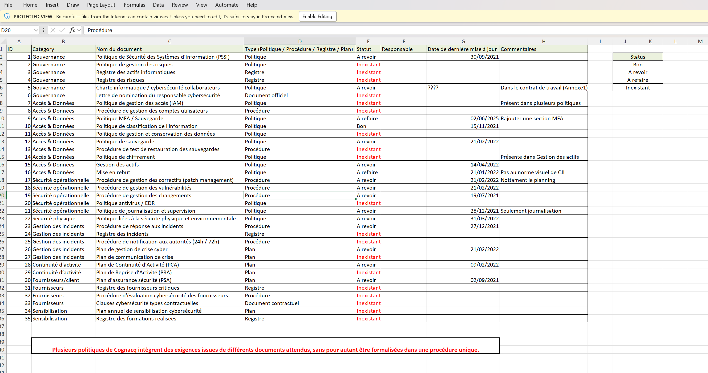

Préparation audit NIS2
C2 — Prise en compte des normes et standards
Participation à la préparation d’un audit NIS2 réalisé par Axians, avec pour objectif de centraliser, organiser et déposer les documents demandés par les auditeurs dans un cloud sécurisé.
Contexte
Dans le cadre de mon alternance chez Cognaqc-Jay Image, l’entreprise a engagé une démarche de conformité à la directive NIS2. Un audit de maturité cybersécurité a été réalisé afin d’évaluer le niveau de préparation de l’entreprise.
Objectif
Mon rôle consistait à rechercher, trier et centraliser les documents demandés par les auditeurs, puis à les déposer de manière structurée sur un espace sécurisé fourni par Axians.
Environnement technique
Actions réalisées
Analyse du besoin
J’ai commencé par identifier les documents attendus par les auditeurs et les catégories dans lesquelles ils devaient être classés.
Recherche documentaire
J’ai recherché les documents dans les archives internes et dans les espaces de stockage disponibles, notamment sur le serveur DFS.
Classement des documents
Les documents ont été organisés selon les catégories imposées : contrats, documentation technique, inventaire d’actifs, gouvernance, sauvegarde, PRA/PCA, RH et gestion des risques.
Dépôt sécurisé
Les documents récupérés ont ensuite été déposés sur le cloud sécurisé mis à disposition par Axians, via des accès protégés.
Catégories documentaires
- Contrats
- Documentation technique
- Inventaire d’actifs classifiés
- Organigramme
- Plans bâtiment
- Politique et programme de sensibilisation
- Politique de classification des actifs
- Politique de gestion des fournisseurs
- Cadre de gouvernance
- Plan de sauvegarde
- Procédure de gestion des risques
- PRA / PCA
- Documents RH
Résultats obtenus
Apports pour l’entreprise
Cette mission a permis de centraliser les documents critiques, d’améliorer la visibilité documentaire et d’identifier les éléments manquants ou difficilement accessibles.
Constats réalisés
- Documents parfois dispersés dans plusieurs emplacements
- Classement documentaire à améliorer
- Droits d’accès à vérifier selon les dossiers
- Documents manquants ou incomplets identifiés
Compétences mobilisées
- Prendre en compte les normes et standards
- Organiser et structurer une documentation technique
- Sécuriser des informations sensibles
- Identifier les documents nécessaires à un audit
- Vérifier l’accessibilité et la classification des documents
- Participer à une démarche de conformité cybersécurité
Bilan personnel
Cette mission m’a permis de mieux comprendre l’importance de la nomenclature documentaire et de la conformité dans un contexte cybersécurité. J’ai également pris conscience de l’importance d’une documentation claire, accessible et correctement classée pour faciliter les audits et répondre aux exigences réglementaires.
Preuve documentaire
Suivi documentaire NIS2
Exemple de tableau utilisé pour centraliser et suivre les documents demandés par les auditeurs dans le cadre de la conformité NIS2.

Capture d’écran du fichier de suivi documentaire utilisé pendant la préparation de l’audit NIS2.